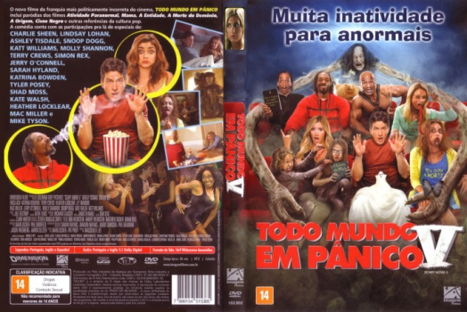

Todo Mundo em Pânico 5 (2013)


Muita inatividade para anormais

Avaliação (TMDb):


4.8/10 (2.3K votos)
Avaliação (Usuário):
Outro Título:Scary Movie 5
País:United States, 86 minutos
Idiomas falados:Inglês, Português
Gênero(s):Comédia
Diretor(s):Malcolm D. Lee
Codec:MPEG-2 (DVD)
Número: 5217
Sinopse:
O novo filme da franquia mais politicamente incorreta do cinema inclui paródias dos filmes "Atividade Paranormal", "Mama", "A Entidade", "A Morte do Demônio", "A Origem", "Cisne Negro" e outras referências da cultura pop.
Elenco:
Ashley Tisdale, Simon Rex, Gracie Whitton, Ava Kolker, Molly Shannon, Josh Robert Thompson (voz), Darrell Hammond, Marisa Saks, Dylan Morris, Ryan Morris
Tipo de mídia: DVD R/RW,
Legendas: Inglês, Espanhol, Português, Sem Legendas
Alugado: Não
Tela: Anamorphic Widescreen